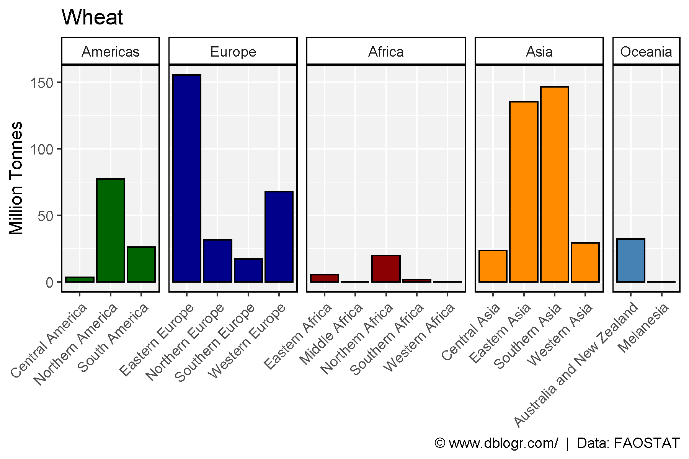

# devtools::install_github("derekmichaelwright/agData")
library(agData) # Loads: tidyverse, ggpubr, ggbeeswarm, ggrepel# Prep data
colors <- c("darkgreen", "darkred", "darkgoldenrod2")
areas <- c("World",
levels(agData_FAO_Country_Table$Region),
levels(agData_FAO_Country_Table$SubRegion),
levels(agData_FAO_Country_Table$Country))
xx <- agData_FAO_Crops %>%
filter(Crop == "Wheat") %>%
mutate(Value = ifelse(Measurement %in% c("Area harvested","Production"),
Value / 1000000, Value),
Unit = plyr::mapvalues(Unit, c("hectares","tonnes"),
c("Million hectares","Million tonnes")))
areas <- areas[areas %in% xx$Area]
# Plot
pdf("wheat_fao.pdf", width = 12, height = 4)
for(i in areas) {
print(ggplot(xx %>% filter(Area == i)) +
geom_line(aes(x = Year, y = Value, color = Measurement),
size = 1.5, alpha = 0.8) +
facet_wrap(. ~ Measurement + Unit, ncol = 3, scales = "free_y") +
theme_agData(legend.position = "none",
axis.text.x = element_text(angle = 45, hjust = 1)) +
scale_color_manual(values = colors) +
scale_x_continuous(breaks = seq(1960, 2020, by = 5) ) +
labs(title = i, y = NULL, x = NULL,
caption = "\xa9 www.dblogr.com/ | Data: FAOSTAT") )
}
dev.off()## png
## 2# Prep data
colors <- c("darkgreen","darkblue","darkred","darkorange","steelblue")
xx <- agData_FAO_Crops %>%
filter(Crop == "Wheat", Measurement == "Production", Year == 2017,
Area %in% agData_FAO_Region_Table$SubRegion) %>%
left_join(select(agData_FAO_Region_Table, Area=SubRegion, Region), by = "Area")
# Plot
mp <- ggplot(xx, aes(x = Area, y = Value / 1000000, fill = Region)) +
geom_bar(stat = "identity", color = "black") +
facet_grid(. ~ Region, scales = "free_x", space = "free_x") +
scale_fill_manual(values = colors) +
theme_agData(legend.position = "none",
axis.text.x = element_text(angle = 45, hjust = 1)) +
labs(title = "Wheat", y = "Million Tonnes", x = NULL,
caption = "\xa9 www.dblogr.com/ | Data: FAOSTAT")
ggsave("wheat_01.png", mp, width = 6, height = 4)
© Derek Michael Wright www.dblogr.com/